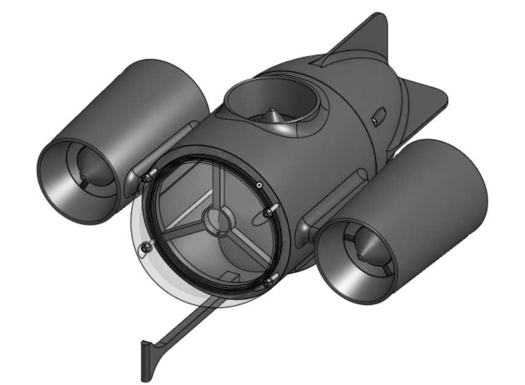

Overview
For the 2026 SeaPerch competition, our team ("Subatomic Submarines") designed a torpedo-inspired, three-section modular ROV optimized for speed, stability, and precision across the Mission and Obstacle Courses. Using the Engineering Design Process, we iteratively designed, tested, and refined each subsystem based on measured data — with two of our final design choices actually contradicting our initial hypotheses. The complete vehicle cost just $124.78.

The Challenge
The Obstacle Course tests speed: the ROV starts at the surface, navigates through five 18" hoops set at varying angles, resurfaces, and returns in reverse — all against the clock. The Mission Course tests precision manipulation across four scored tasks worth 110 points total:
- Task 1 — Bridge (26 pts): retrieve red float and hook to rear right pillar, slide cover pipe to repair the support beam, release green float from front left pillar
- Task 2 — Dam (24 pts): remove plug from the surface vessel, insert it into the dam wall, rotate the flood gate cover
- Task 3 — Debris (38 pts): relocate marine life, lift heavy submerged debris and place it on the surface vessel hook
- Task 4 — Sample (12 pts): retrieve the water sampler and place it on the surface vessel hook
Bonus points are awarded for finishing under 6 minutes (+5) and under 4 minutes (+10). Our design had to balance speed, maneuverability, and stability simultaneously.
Modular Torpedo Architecture
We chose a three-section modular body sealed with O-rings, letting us develop and test each subsystem independently and make fast field repairs during limited pool time. The front houses the camera and nose cone, the center holds the Venturi propulsion junction, and the rear contains the electronics enclosure. The torpedo form minimizes hydrodynamic drag while keeping the build compact and robust. The entire body is 3D printed in PLA (594.56 g total) for a strong, lightweight structure.
Hydrodynamic Nose Cone — CFD Study
Using OpenFOAM CFD simulations under identical conditions, I compared four nose geometries: flat (Cd ≈ 1.10), cone (Cd ≈ 0.50), ogive (Cd ≈ 0.42), and hemisphere (Cd ≈ 0.35). We hypothesized the sharper ogive or cone would win — but the hemisphere achieved the lowest drag, roughly 17% below the ogive and 68% below the flat design.
At the low Reynolds numbers of our operating regime, maintaining attached flow (the Coandă effect) matters more than a sharp frontal profile — which is why the smoother hemisphere outperformed sharper geometries. We paired the winning shape with a clear resin hemispherical dome housing a forward-facing fishing camera; the curved dome eliminates water refraction distortion, giving the pilot accurate depth perception for precise object alignment during mission tasks. Trusting the data over our intuition was the right call.

Venturi Tube Propulsion
Instead of exposed propellers, we developed an integrated Venturi propulsion system that accelerates water through a converging inlet, a narrow throat (housing the motor and propeller), and an expanding diffuser that recovers pressure and minimizes exit turbulence. A streamlined nose spike at the inlet guides water in smoothly. Two horizontal tubes provide forward and reverse thrust; one vertical tube handles depth control.
Optimized Geometry
- Overall length: 4.88 in (≈124 mm)
- Inlet rounded radius: 0.3 in · Outlet rounded radius: 0.05 in
- Segmented lengths: 2.25 in inlet, 1 in throat, 1 in diffuser start
The Physics
The design applies the continuity equation (A₁v₁ = A₂v₂) and Bernoulli's principle. With a 2.0" inlet (A₁ ≈ 0.00202 m²) narrowing to a 1.0" throat (A₂ ≈ 0.000506 m²), inlet flow measured at 1.8 m/s theoretically accelerates to about 7.2 m/s, predicting roughly 19.7 N of thrust. Real-world friction, turbulence, and propeller efficiency bring the measured peak to 4.5 N at 9820 RPM — and understanding that gap between theory and reality was one of the most valuable parts of the project.
Testing
I force-tested four Venturi geometries in water against a bare-motor control by suspending each on a force sensor. The optimized 4.88" design (Tube D) produced the highest average thrust, ~4.7% above the next best. The small margin between the top designs revealed diminishing returns, confirming we'd reached a practical optimization limit.

Electronics & Control
The ROV runs on an Arduino Uno with an Ethernet Shield housed in a custom waterproof enclosure. Two L298N dual motor drivers control the three thrusters, converting the Arduino's digital direction signals and PWM outputs into the correct voltage and direction for each motor.
- Two analog joysticks independently drive the two horizontal thrusters
- Two push buttons control the vertical thruster (up/down; both released = stopped)
- PWM on the L298N enable pins provides smooth speed control
- ±10 joystick dead zones prevent jitter when the sticks are centered
- 12V power delivered via XT30 connectors for safe, high-current connections
Wiring is color-coded for maintainability: black (GND), white (5V), red (12V), and yellow/blue/green for signal lines.

Mission Hook — One Tool, All Four Tasks
Rather than swapping tools mid-run, we designed a single double-edge hook: the top edge hooks and lifts objects, while the bottom edge pulls and drags. This one tool completes all four mission tasks — grabbing and transporting floats, sliding the repair pipe, inserting the dam plug, rotating the flood gate, and lifting debris — with no changes, maximizing versatility and speed.

Results
- Ranked 4th out of 9,000+ teams worldwide
- Won the Innovation Award for best ROV design
- Peak thrust of 4.5 N @ 9820 RPM, validated by force-sensor testing
- Complete, competition-ready build for just $124.78
Technical Design Report
The full Technical Design Report (TDR) documents our complete engineering process, CFD analysis, Venturi testing data, and design iterations in detail.
📄 View Full Design Report (PDF)What I Learned
The strongest lesson was data-driven decision-making — both final choices (Venturi Tube D and the hemispherical nose) contradicted our hypotheses, and trusting the measured data produced a better vehicle. Comparing the ~19.7 N theoretical thrust to the 4.5 N measured value gave me real intuition for how friction, turbulence, and propeller efficiency erode ideal performance. I also learned that optimizing subsystems in isolation isn't enough: small changes in weight distribution and propulsion alignment had outsized effects on overall stability, reinforcing a systems-level mindset. Next steps would be smoothing internal Venturi surfaces to reduce turbulence and adding sensor feedback for partial automation.